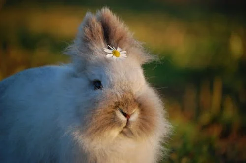

Зайчики

У зеленому лісі, де сонячні промінчики ніжно гралися на траві, жило два зайчики – маленький сіренький Зайко та його сестричка Біляночка. Вони обожнювали стрибати між квітами, нюхати весняні пахощі й гратися у хованки.
Одного дня Зайко знайшов незвичайну стежинку, яка вела до таємничої галявинки з великими червоними ягодами. Він зрадів і помчав за Біляночкою, щоб поділитися відкриттям. Разом вони спробували ягоди і раптом почули ніжний сміх: це була маленька фея лісу, яка охороняла галявинку.
«Ви дуже сміливі й добрі», – сказала фея. – «Тому я подарую вам чарівні мітелки: вони допоможуть вам завжди знаходити дорогу додому».
З того часу Зайко та Біляночка стали не тільки допитливими й веселими зайчиками, а й маленькими дослідниками лісу. Вони навчилися допомагати друзям і знаходити красу навіть у найпотаємніших куточках свого зеленого дому.
І щоразу, коли сонечко заходило за обрієм, зайчики затихали в своїй нірці, мріючи про нові пригоди.
У лісовій галявині жив веселий зайчик Пухлик. Він дуже любив стрибати і влаштовувати невеличкі пустощі. Одного разу Пухлик побачив, як його подруга Зірочка намагається дістати мед із високого деревця.
– Потрібна допомога? – запитав Пухлик, підстрибуя.
– Так, але я не можу дістати… – засумувала Зірочка.
Тоді Пухлик придумав план. Він стрибав на сусіднє дерево, хитромудро підштовхнув гілку, і мед упав прямо до Зірочки.
– Ура! – радісно закричала Зірочка. – Ти справжній герой!
Після цього зайчики сміялися, ділилися медом і грали в хованки до самого заходу сонця. А коли настала ніч, вони лежали на м’якій траві й рахували зірки, мріючи про нові пригоди.
Жив у лісі зайчик на ім’я Сніжок. Він був дуже допитливий і завжди потрапляв у кумедні ситуації. Одного разу він побачив у лісі дивну тінь.
– Хто це там? – промурмотів Сніжок і тихенько підійшов.
А це виявився маленький їжачок, який загубив свої окуляри. Сніжок вирішив допомогти. Він підняв їжачка на спину і почав шукати окуляри між листям, гілочками та грибами.
– Ось вони! – вигукнув Сніжок, знайшовши окуляри під великим листком.
Їжачок був так радий, що влаштував для Сніжка маленьке частування з ягід і горішків. А Сніжок зрозумів, що допомагати друзям – це не тільки корисно, а й весело!
Відтоді Сніжок і їжачок стали найкращими друзями, і всі лісові звірята знали: якщо ти в біді, Сніжок завжди прийде на допомогу.
Якщо хочеш, я можу скласти серію дуже коротких і смішних історій про зайчиків на 1–2 хвилини читання, які ідеально підходять для дітей перед сном. Це буде щось на кшталт “Міні-пригоди зайчика Сніжка”.
Зайчик Пух помітив у лісі маленьку калюжу.
– Хоп-хоп! – скаче він і плескає лапками у воді.
Раптом із калюжі вилетіла рибка!
– Дякую за веселощі! – підморгнула рибка.
Пух сміявся і стрибав далі, а калюжа залишалася місцем маленьких пригод.
Зайчик скаче по лісі.
Раптом бачить морквину.
– Ура! – радіє зайчик і гризе її.